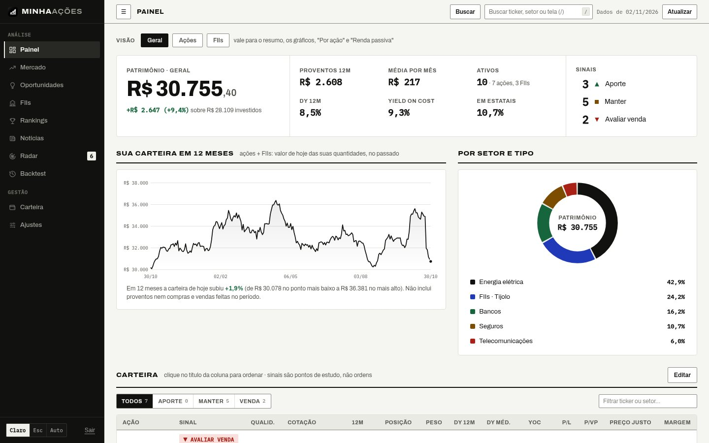
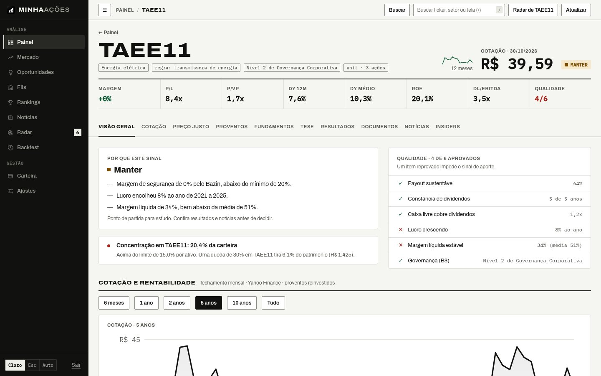
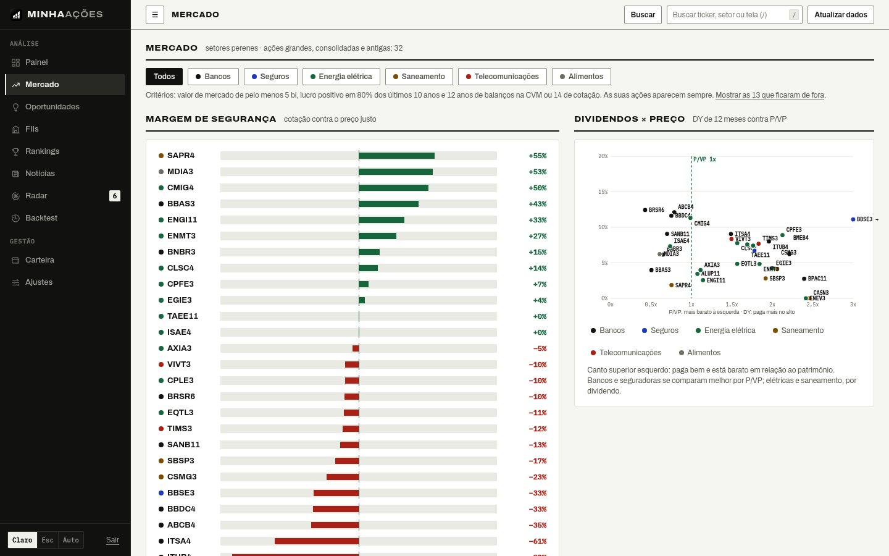
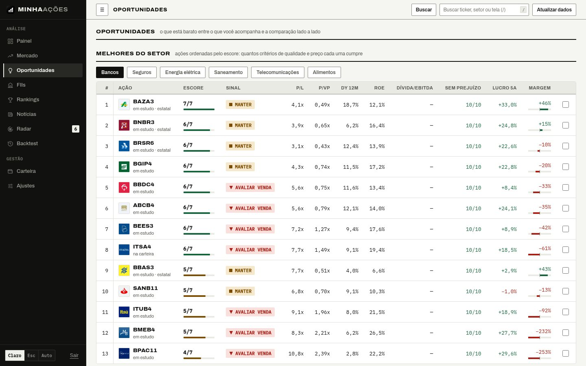
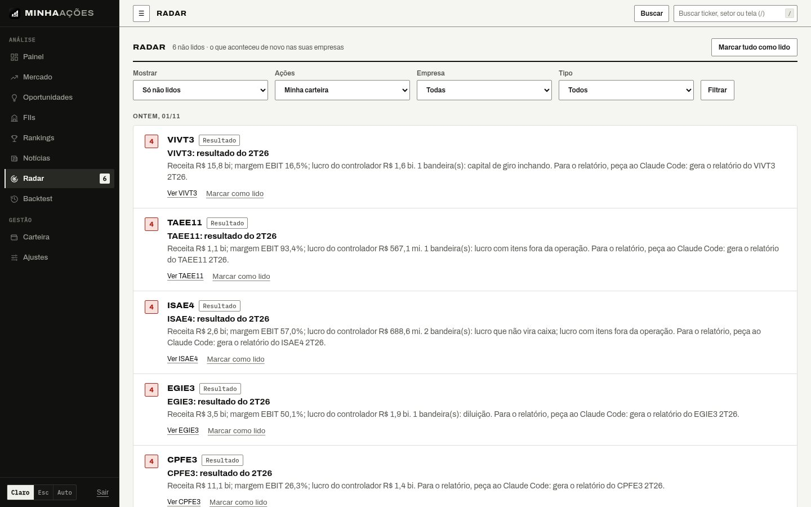
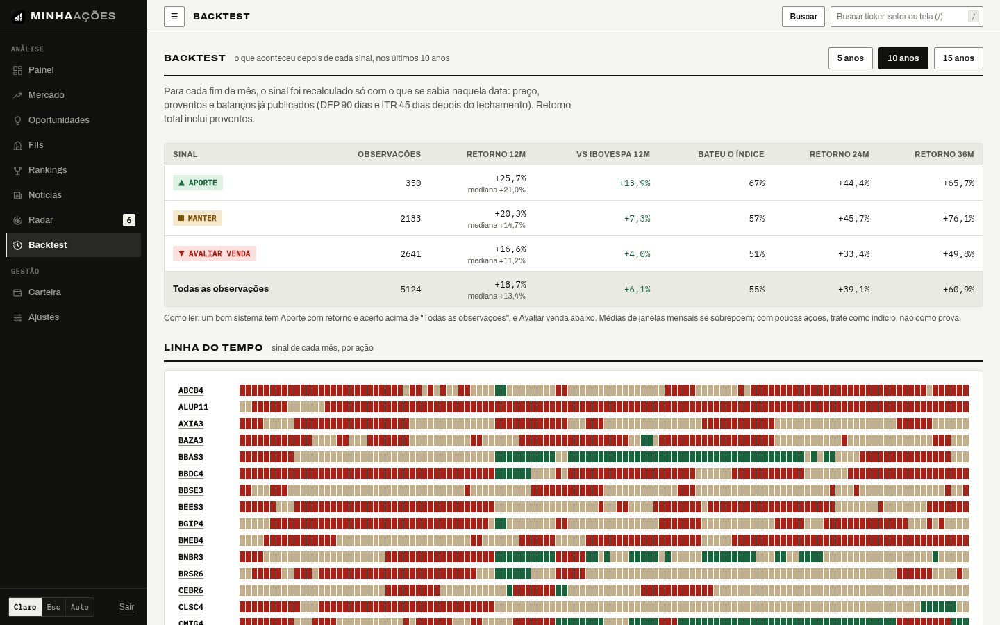
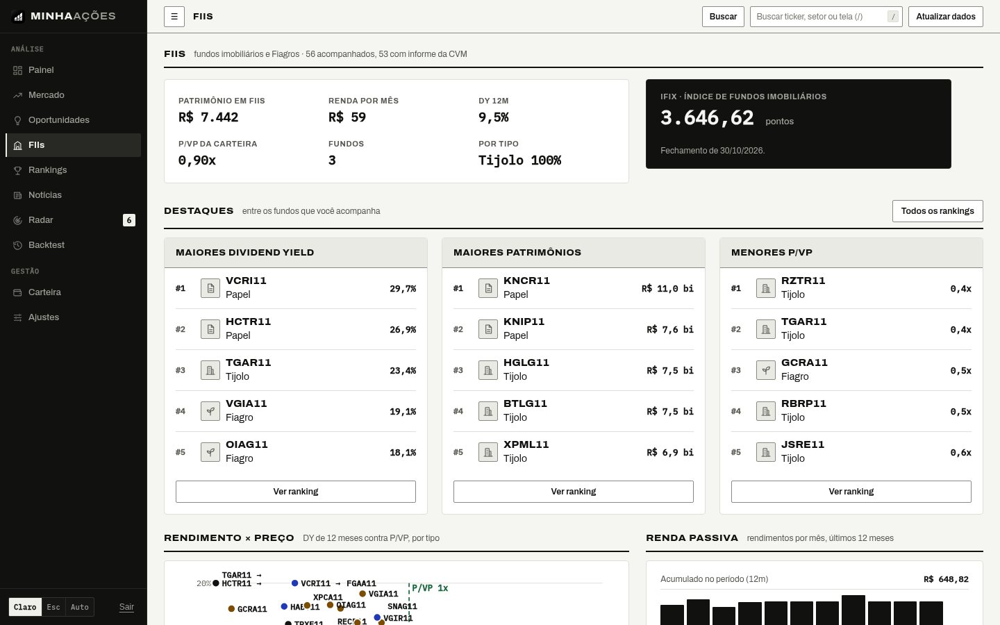

Projeto 05 / 05 · Pessoal
MinhaAções
Pipeline de Dados Financeiros e Análise Fundamentalista da B3
- Tipo
- Projeto pessoal
- Vínculo
- Uso próprio, na minha carteira de longo prazo
- Papel
- Projeto e desenvolvimento de ponta a ponta · engenharia de dados e full-stack
- Status
- Em produção
- Acesso
- Login Google restrito a um e-mailCódigo privado

Contexto
Acompanhar uma carteira de dividendos na B3 exige juntar balanço da CVM, cotação, proventos, fatos relevantes e notícias de lugares diferentes. Os sites de indicadores misturam dados atrasados sem dizer de onde vêm, e um número errado vira uma decisão errada.
Um pipeline que coleta tudo sozinho todo dia, trata os demonstrativos oficiais da CVM e transforma em indicadores, preço justo e um sinal para estudo por ação (aporte, manter ou avaliar venda), sempre com o motivo. O que muda nas empresas chega numa caixa de entrada com importância de 1 a 5, e o mais grave vai para o Telegram.
Resultado
- 10coletas diárias automatizadas
- 15anos de balanços oficiais da CVM
- 449testes automatizados
Em produção na Vercel com Postgres no Neon e em uso diário na minha própria carteira: painel, carteira importada da B3, mercado dos setores perenes, FIIs, radar de eventos, tese por ação e backtest do sinal contra o Ibovespa.
Telas do sistema






Telas com uma carteira fictícia; os dados de mercado são reais.
Arquitetura
- Fontes CVM (DFP, ITR, IPE, VLMO) · Yahoo · Tesouro · BCB · notícias
- Coleta 10 rotinas isoladas, uma por workflow
- Tratamento Séries anuais e trimestrais · fundamentos na data
- Análise Indicadores · preço justo por setor · confiança do dado
- Sinal Aporte, manter ou venda · tese · Radar
- OrquestraçãoGitHub Actions · workflow reutilizável · após o pregão · avisos no Telegram
- InfraFastAPI e Next.js na Vercel · Postgres no Neon · login Google de um único e-mail
Decisões de engenharia
- 01Um scraper por workflow: cada coleta é uma rotina própria com horário próprio, todas sobre o mesmo workflow reutilizável. Ficam fora do limite de 300 s da Vercel, e uma que falha fica vermelha sem derrubar as outras.
- 02Fonte oficial primeiro: os fundamentos vêm dos demonstrativos da CVM, com o ticker ligado ao CNPJ pelo cadastro da empresa; o Yahoo fica para cotação, proventos e reserva. Cada armadilha dos dados abertos que já causou número errado (exercício anterior, zero que significa "não informado", ações em milhares) ganhou um teste.
- 03Backtest sem olhar o futuro: o sinal é recalculado em cada fim de mês dos últimos 5, 10 ou 15 anos só com balanços já publicados e preços até a data, e o retorno em 12, 24 e 36 meses é comparado com o Ibovespa.
- 04A qualidade do dado decide: cada ação recebe confiança alta, média ou baixa (balanço velho, P/L fora de faixa, lucro por ação calculado longe do publicado). Com confiança baixa, o sinal de aporte é bloqueado.
- 05Regras por setor: banco é avaliado pelo P/VP justo (ROE contra custo de capital), transmissora pelo Bazin, e o Bazin exige o maior entre 6% e o juro real do Tesouro IPCA+ mais 1 ponto.
- 06IA sem API paga: quando sai um resultado, um comando monta o dossiê do trimestre (números, bandeiras contábeis, documentos da CVM e insiders) e o Claude Code escreve o relatório, que volta para a página da ação. O dossiê não leva valores da carteira.
Stack